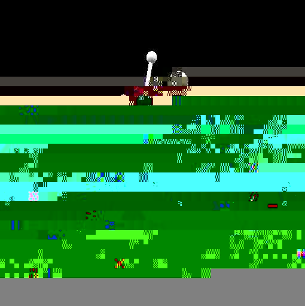

Authors P. N. Day, Z. Wang, and R. Pachter
Materials Directorate, Wright Laboratory
WL/MLPJ
Wright-Patterson AFB, OH
VRML Display
The objective of this effort is to explore and design novel materials
with controlled properties for laser hardening applications at the
Materials Directorate, AFRL, applying newly developed methods,
algorithms and scalable advanced software. In particular, we study
materials with fast nonlinear optical (NLO) response over broad
spectral band-widths such as reverse saturable absorbers, as well as
polymer dispersed liquid crystals and advance absorbing dyes, which
are critical for laser eye and sensor protection.
Author Dr. Lawrence Scanlon
Air Force Research Lab
Wright-Patterson, AFB OH

|

Computational chemistry has been used to investigate the nature of
lithium bonding within a C60 [Fullerene] carbon lattice.
Two lithium-C60 systems were investigated. A
trilithium-C60 system with a charge and multiplicity of
(0,4) is shown. Optimized geometries for these systems suggest two
types of lithium within the C60 lattice. An ionic lithium
is obtained for the dilithium-C60 system and a lithium
with covalent character is obtained for the trilithium-C60
system. In both cases the lithium-lithium separation of 2.96 Angstroms
or less is consistent with that required in order to achieve ampere-hour
capacities greater than that obtained in a stage 1 lithium intercalated
graphite.
Authors Jeff Mills and Jerry Boatz
Air Force Research Laboratory
Propulsion Directorate
Edwards AFB, CA
|
tetra(nitromethyl)spirotriskadecane |
2,2,6,6-tetra(nitromethyl)-spiro[3.3] heptane |

2,6-bisoxetane |

VRML Display
The heat of formation of a chemical substance, the energy required to assemble it from its component elements, provides an important measure of its intrinsic energy content. Thus, prediction of this parameter plays an important role in the search for new energetic molecules. Accurate theoretical calculations enable evaluation of prospective high-energy rocket fuels and propellant additives in support of experimental investigators.
These calculations provide critical parameters necessary for the
evaluation of a specific set of proposed rocket fuels and also help
to justify a means of efficiently screening prospective molecules
in the future. Theoretical investigations of this sort, in tandem
with experimental research, are part of the effort to reduce the
time and expense required to develop and deploy new propellants
capable of higher performance and increased payload.
Authors Mark S. Gordon and Takako Kudo
Department of Chemistry
Iowa State University
Ames, IA
VRML Display
Polyhedral Oligomeric Silsesquioxanes (POSS) hold great promise as lubricants and protective coatings for space vehicles, among many other uses. At present, however, little is known about the mechanism of formation of these species, or about the role of solvent, catalysts, or pendant chemical groups. The objective of this research is to use computational chemistry to determine plausible routes to the POSS and then to propose new synthetic routes and new species.